Modeling a DC Motor in Stateflow®
This is a model of a permanent magnet DC motor. The mode logic and dynamics of the DC motor are both modeled using Stateflow.
The DC motor state chart consists of two superstates: powerOn and powerOff. If the motor is powered on, it can be in one of two substates: up or down, signifying the direction of movement.
Note: This is a simplistic model of a DC motor. You can build more sophisticated DC motor models using Simscape™, which extends Simulink® with tools for modeling and simulating multidomain physical systems, such as those with mechanical, hydraulic, and electrical components.
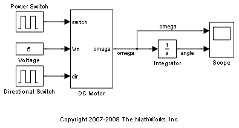 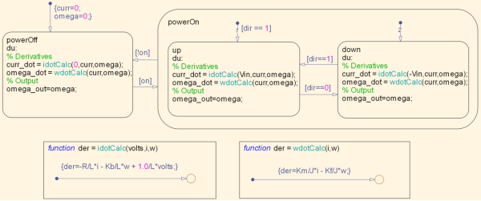The dynamics of the motor are defined directly in the state chart using graphical functions and change depending on the state of the motor. For example, when the motor is in the powerOff state, the voltage applied is equal to zero. When the motor is in the powerOn state, the voltage applied is either positive or negative, depending on the direction of the motor.
To review, the differential equations defining a permanent magnet DC motor are as follows:
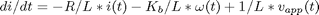
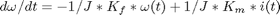
where
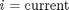

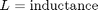
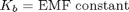
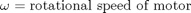
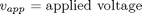
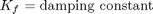
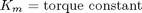